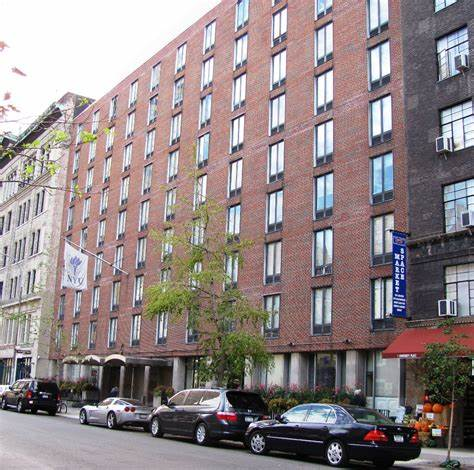

NYU Community
Weinstein Hall
캠퍼스 중심에 위치한 다이닝 중심 기숙사

특징
📍 5 University Place, 워싱턴 스퀘어 북동쪽 모서리
👥 약 600명의 1학년 학생 수용
🏢 두 개의 타워로 구성된 9층 건물
🛏️ 주로 2인/3인실, 일부 1인실 포함
✅ 장점: 건물 내 식당(Downstein, Upstein, Kosher), 위치 매우 좋음
⚠️ 단점: 오래된 시설, 작은 방 크기
👍
← 메인으로 돌아가기